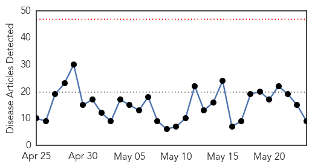
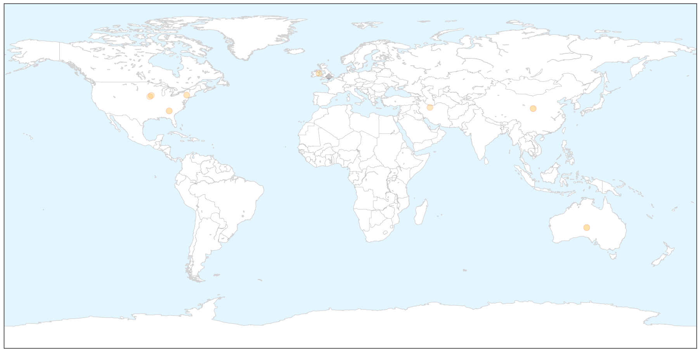
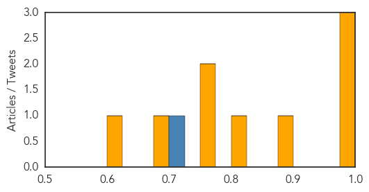
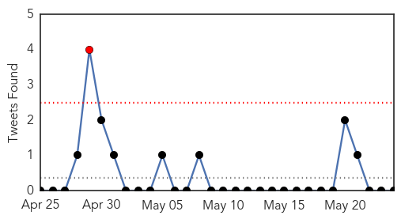

Influenza
30-Day Web Trend
0 alerts, 0 warnings

30-Day Twitter Trend
4 alerts, 0 warnings

Article Locations

X

Article Confidences
Top Articles:
- 1.000
- Breaking National News and Australian News
- 1.000
- Which one do you have?
- 0.992
- Researchers create new vaccine development method for H5N1, H7N9 strains of avian influenza
- 0.895
- Pet Alert: Deadly Dog Flu Strain Confirmed in Georgia
- 0.818
- Kansas State University Scientists Develop Vaccine For H5N1, H7N9 Avian Influenza Strains
- 0.751
- May 24, 2015 Archives
- 0.751
- May 23, 2015 Archives
- 0.680
- Millions of birds dead due to flu to be disposed of soon
- 0.622
- Bird flu hitting egg producers hard; farmers must kill hens by the million
Top Tweets:
- 0.704
- Transmission Dynamics of Pandemic Influenza A(H1N1)pdm09 Virus in Humans and Swine in Backyard Farms in Tumbes Pe... http://t.co/oej6QIbmb0
Unknown
30-Day Web Trend
0 alerts, 0 warnings

30-Day Twitter Trend
1 alerts, 0 warnings

Article Locations


Article Confidences

Top Articles:
- 0.976
- Raw Tuna from Sushi could be at heart of recent Salmonella Outbreak: CDC
- 0.967
- Children won’t get vaccines for TB until June, but Leo says it’s not a problem
- 0.945
- Acute Diarrhoea in adult
- 0.917
- Chicago Tribune
- 0.917
- Chicago Tribune
- 0.917
- Chicago Tribune
- 0.917
- Chicago Tribune
- 0.917
- Chicago Tribune
- 0.917
- Chicago Tribune
- 0.883
- Salmonella tied to raw tuna sickens 10 in Maricopa County
- 0.876
- Heat rise link to encephalitis
- 0.869
- NC Doctors learn lessons from flu season
- 0.795
- FollowProfile Picture POLITICS ‘Zimbabwe leads Africa with an adult literacy rate of over 90%.’ True or false?
- 0.784
- Dog owners warned about ‘Alabama Rot’
- 0.735
- Rising temperature in Varanasi brings along dehydration and heat stroke
- 0.709
- Plague found in ground squirrel near Boise
- 0.690
- Monday Medical: Protect yourself from foodborne illnesses
- 0.690
- California Dept. of Public Health still looking for source of bad tuna, salmonella scare
- 0.681
- Expert Raises Concern About TB’s Prevalence Rate In Edo
- 0.618
- Syphilis Cases Increased by 79 Percent in RI Last Year...
- 0.597
- The tricky issue of consent in adolescent mental health care
- 0.591
- Most E. Texas hospitals seeing drop in infection rates
- 0.591
- Most E. Texas hospitals seeing drop in infection rates
- 0.587
- Martin County health officials offer ‘Healthy Summer Tips’: Naegleria, Vibrio among health risks
- 0.567
- ‘Cousin marriages main reason behind rise in blood diseases’
- 0.558
- To Avoid Lyme Disease, Follow These Six Tips (ICYMI)
- 0.545
- Polish president concedes defeat to conservative challenger
- 0.545
- Iraqi forces lacked ‘will to fight’ over Iraq’s Ramadi, US says
- 0.545
- Thousands mourn slain Burundi opposition leader, vow intensified protests
- 0.545
- Putin enacts law banning ‘undesirable’ NGOs
- 0.545
- Malaysia finds mass graves at suspected human trafficking camps
- 0.518
- HIV+ girl awaits action over ‘medical error’
- 0.502
- Heat wave hits life in west Tarai
Top Tweets:
-
No tweets found for May 24, 2015